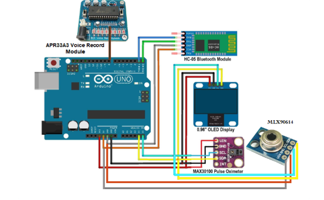
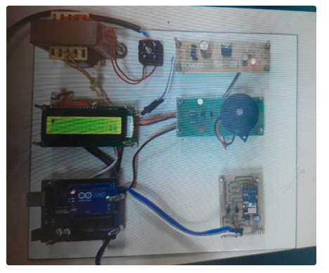
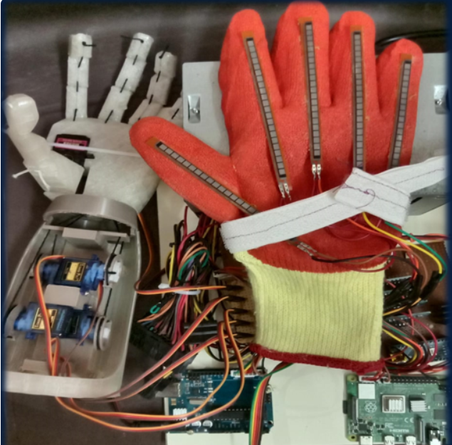
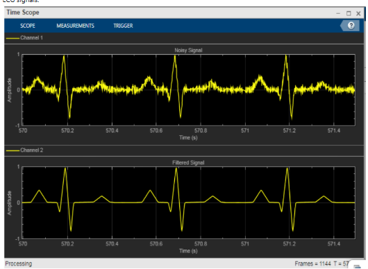

Florida Institute of Technology
Jul 2024 – May 2026
GPA: 3.83 / 4.0
Biomedical Engineer • Researcher • Signal Processing
Biomedical Engineering graduate student focused on physiological signal processing, biomedical data analysis, wearable sensing, and healthcare technology development.
Professional Summary
I am currently pursuing a Master of Science in Biomedical Engineering at Florida Institute of Technology, with an expected graduation in May 2026. My academic and research background spans biomedical signal processing, wearable sensing, healthcare device development, wet-lab biomaterials work, and translational biomedical research.
My work includes thesis research on the morphological and temporal relationship between seismocardiography (SCG) and carotid vibration signals using wearable IMU sensors, as well as engineering projects involving remote patient monitoring, ECG-based authentication, prosthetic design, and image processing for diabetic retinopathy detection.
I enjoy building solutions at the intersection of biomedical engineering, data analysis, and real-world healthcare applications.
Background
Jul 2024 – May 2026
GPA: 3.83 / 4.0
Nov 2020 – Apr 2024
GPA: 3.56 / 4.0
Capabilities
Career Journey
Selected Work

Low-cost Arduino-based remote monitoring device for SpO2, heart rate, and temperature with Bluetooth / app connectivity and voice alert support.

Physical prototype implementation of the multifunctional diagnostic device demonstrating embedded hardware integration and sensor interfacing.

Machine-learning-inspired rehabilitative prosthetic system developed to replicate hand and wrist movement using flex sensors and servo actuation.

Secure access-control concept using ECG signals and deep learning for biometric authentication.
Image-processing project focused on retinal blood vessel edge detection using MATLAB for diabetic retinopathy-related analysis.
Academic Output
Recognition
Recognized across 3 academic years.
Let’s Connect
Biomedical Engineer | Signal Processing & Biomedical Data Analysis